Top-floor flat3 bedrooms
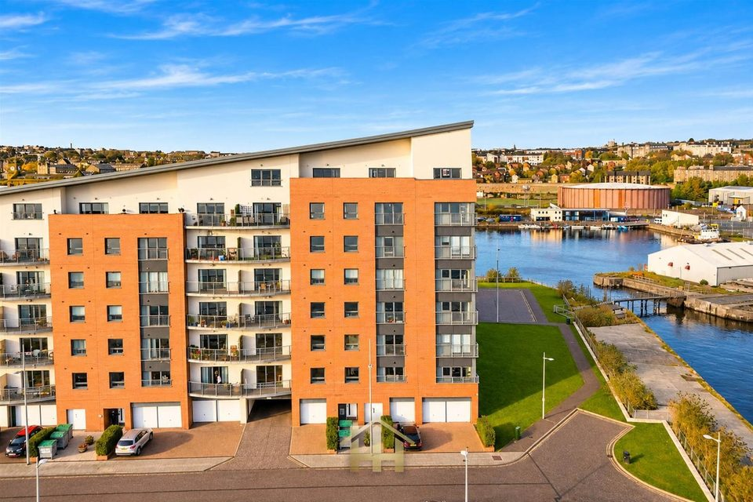
£260,000Offers over
66 Gourlay Yard, Dundee
City Quay
Approx. 1.8 miles · 34 min walk from Tip Top
Listed 13 November 2026 · Harmony Homes
Daily property watch
Homes for sale · 2–3 bedrooms · Up to £270,000
Updated 14 November 2026 · 7 new · 209 in the archive

City Quay
Approx. 1.8 miles · 34 min walk from Tip Top
Listed 13 November 2026 · Harmony Homes
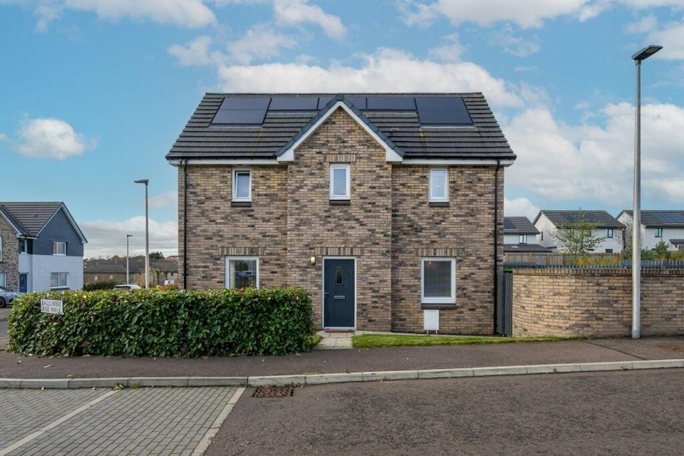
Ballumbie
Approx. 3.8 miles · 73 min walk from Tip Top
Listed 13 November 2026 · Axis Property
Original agent page unavailable; portal listing linked.
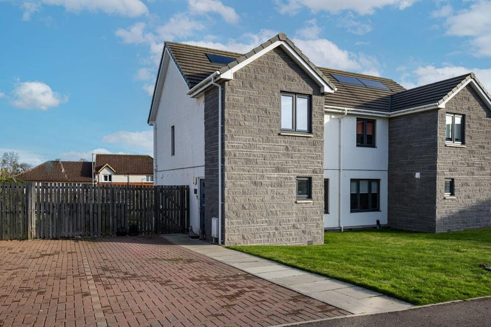
Ballumbie
Approx. 3.3 miles · 64 min walk from Tip Top
Listed 13 November 2026 · Axis Property
Original agent page unavailable; portal listing linked.
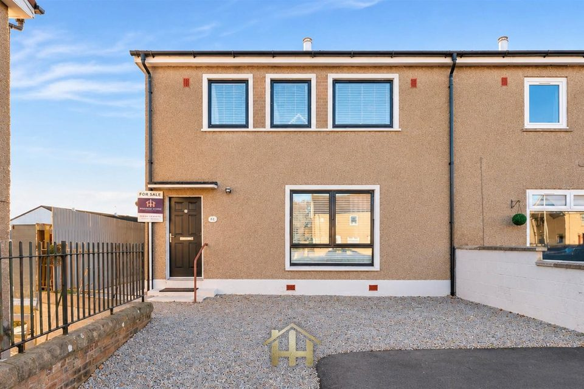
Area to confirm
Approx. 1.9 miles · 40 min walk from Tip Top
Listed 13 November 2026 · Harmony Homes
City Centre
Walking distance unavailable
Listed 13 November 2026 · Alison Bruce Property Management
Grade A listed building; factored by Ross and Liddell; allocated covered parking. Unit number and full property postcode not exposed by inspected listing.
Original agent page unavailable; portal listing linked.
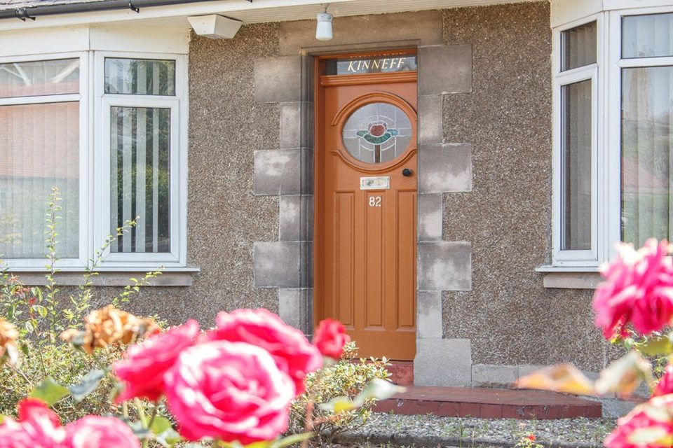
Area to confirm
Approx. 5.7 miles · 110 min walk from Tip Top
First seen 14 October 2026; listing date unavailable · Alan E. Masterton Solicitors
Cosmetic upgrading required. Advertised as three bedrooms with an additional versatile reception room; description also uses 3/4 bedrooms.
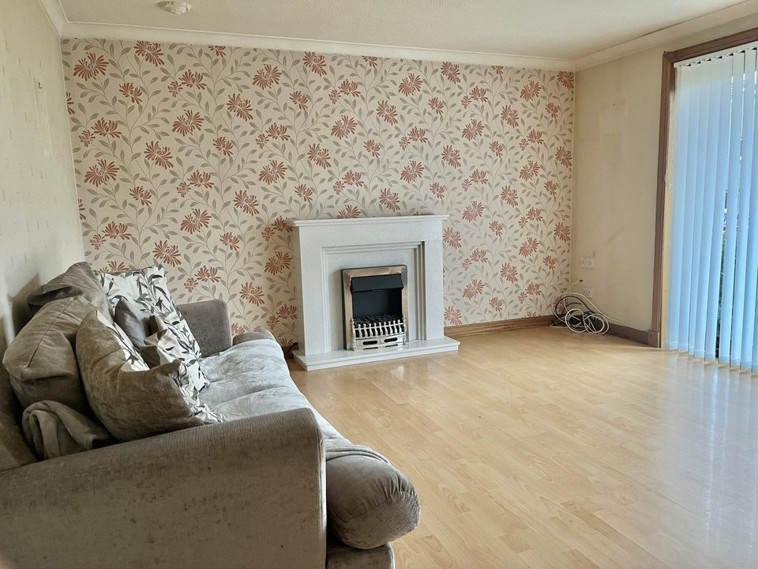
Area to confirm
Approx. 3.1 miles · 61 min walk from Tip Top
First seen 14 November 2026; listing date unavailable · The Chamber Practice
Floor level is inconsistent in advertising: address and TSPC heading say ground floor, while the original description says first floor. Confirm with agent.
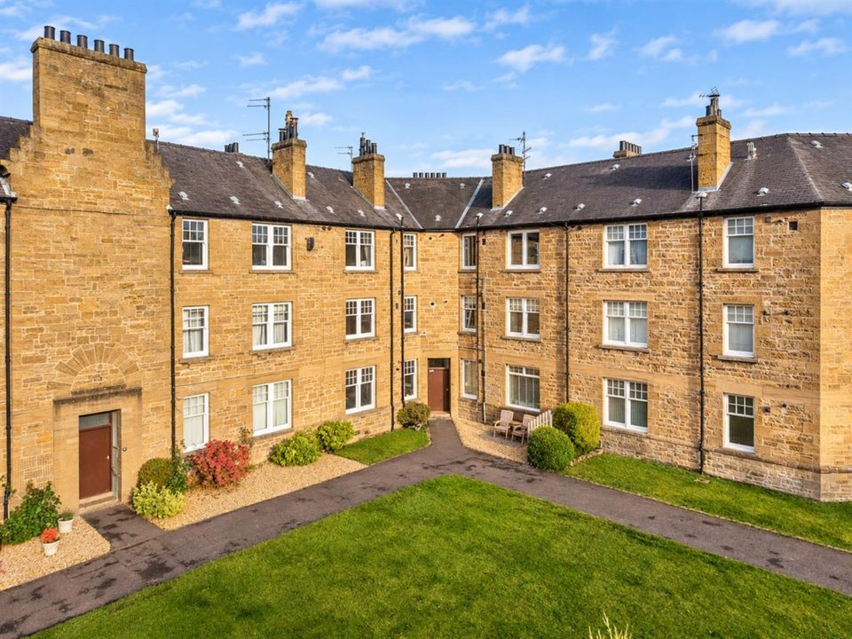
Broughty Ferry
Approx. 4.1 miles · 79 min walk from Tip Top
Listed 11 November 2026 · Rosie Fraser Real Estate
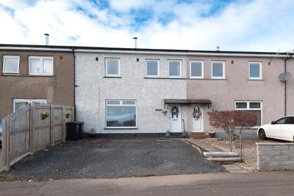
Area to confirm
Approx. 2.0 miles · 41 min walk from Tip Top
First seen 12 November 2026; listing date unavailable · Lindsays
Non-traditional Blackburn construction; agent states it is unaware of lending restrictions.
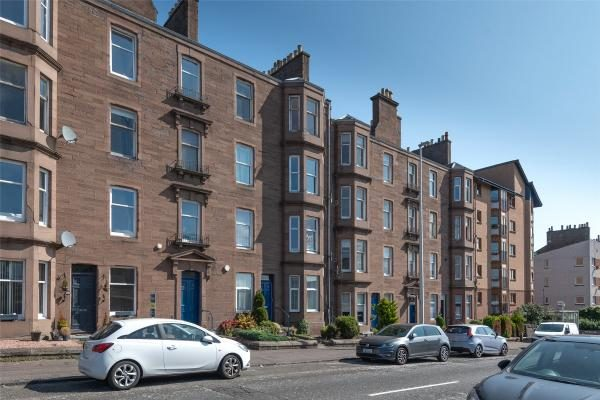
West End
Approx. 2.0 miles · 40 min walk from Tip Top
First seen 12 November 2026; listing date unavailable · Lindsays
Requires upgrading throughout. First discovered in current inventory and included in TSPC newly-listed week; original listing date unavailable.
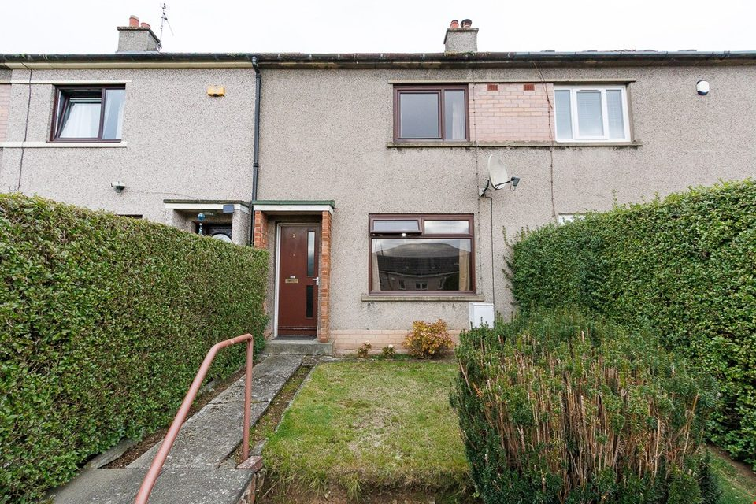
Area to confirm
Walking distance unavailable
First seen 12 November 2026; listing date unavailable · Alan E. Masterton
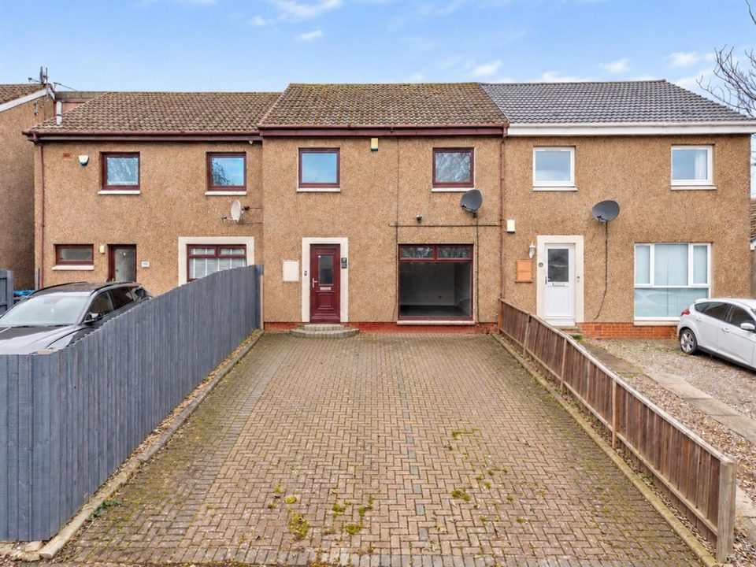
Area to confirm
Approx. 3.5 miles · 67 min walk from Tip Top
Listed 10 November 2026 · Rosie Fraser Real Estate
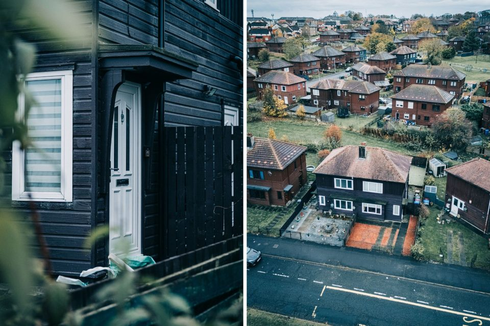
Area to confirm
Approx. 1.7 miles · 33 min walk from Tip Top
Listed 10 November 2026 · Axis Property
Original agent page unavailable; portal listing linked.
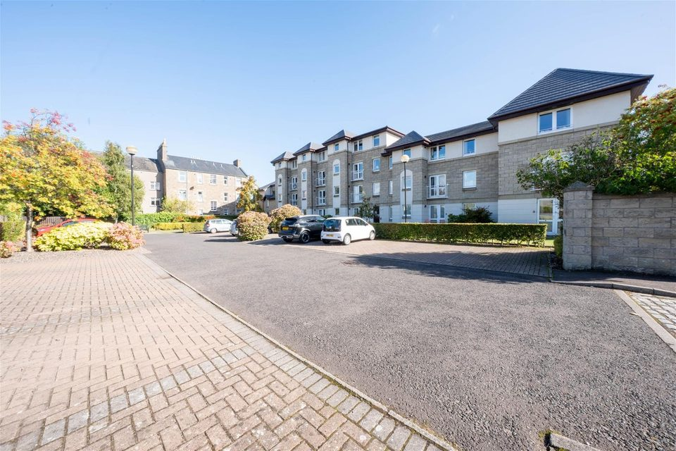
Broughty Ferry
Approx. 4.6 miles · 88 min walk from Tip Top
Listed 5 October 2026 · Simple Approach Estate Agents
Previously reported · Price changed from £210,000 to £199,995
Retirement property exclusively for residents aged 60+. Monthly management fees apply; amount not stated. Current original-agent asking price £199,995; previous context £210,000.
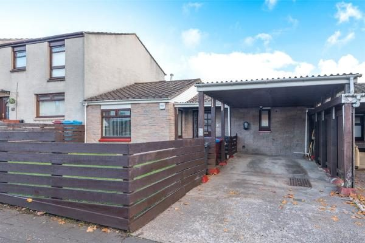
Area to confirm
Approx. 0.7 miles · 13 min walk from Tip Top
First seen 11 November 2026; listing date unavailable · Lindsays
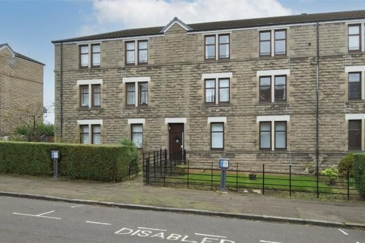
West End
Approx. 2.3 miles · 45 min walk from Tip Top
First seen 11 November 2026; listing date unavailable · Lindsays
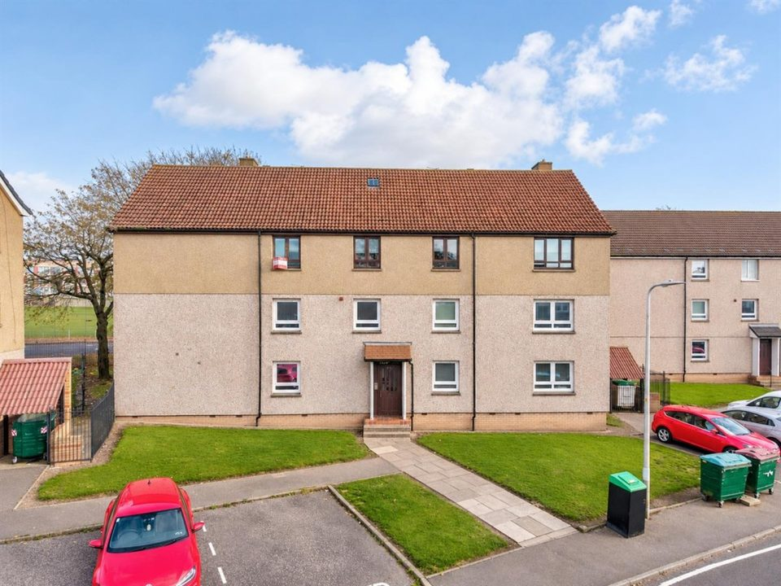
Area to confirm
Approx. 2.4 miles · 47 min walk from Tip Top
Listed 9 November 2026 · Rosie Fraser Real Estate
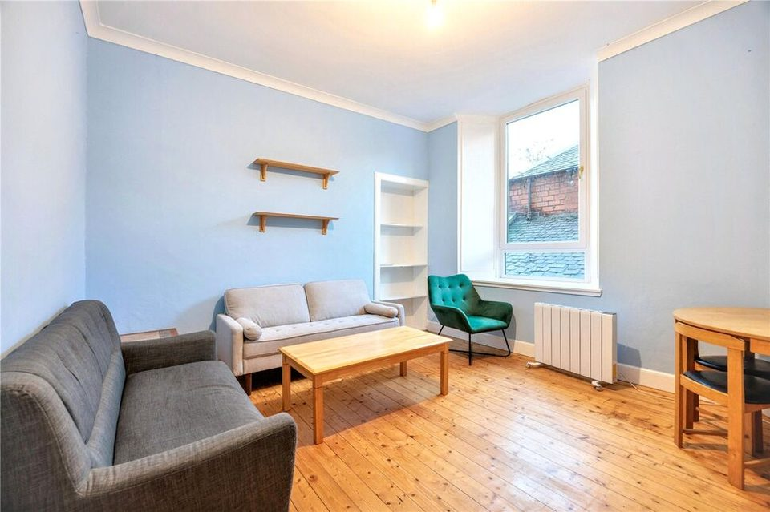
City Centre
Approx. 1.1 miles · 21 min walk from Tip Top
Listed 9 November 2026 · Your Move
Advertised address does not disclose a building or flat number.
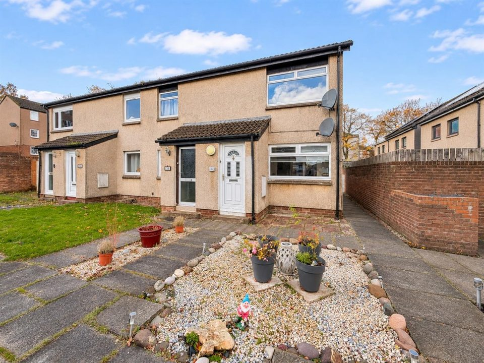
Coldside
Approx. 0.6 miles · 12 min walk from Tip Top
Listed 7 November 2026 · Rosie Fraser Real Estate
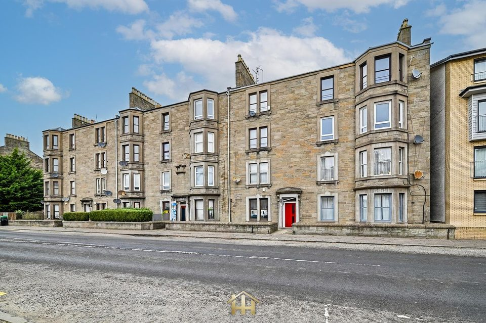
Area to confirm
Approx. 0.3 miles · 7 min walk from Tip Top
Listed 7 November 2026 · Harmony Homes